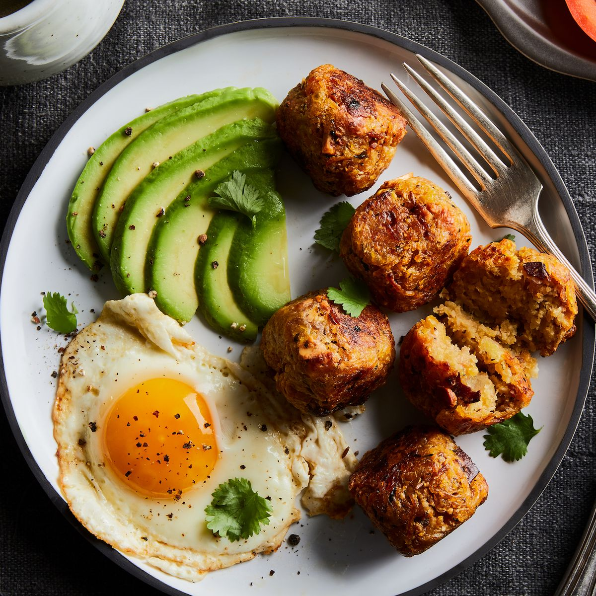

Bolon de Verde

Bolón de verde (which translate into big green ball) has as its star
ingredient green plantains, of which Ecuador is one of the largest producers
worldwide.
These fritters, considered the national dish of Ecuador, are made by cooking
the plantains in boiling water (or frying them in oil), and then mashing them
with a mortar and pestle while they are still hot. To this dough, some salt,
cheese, chicharrón (pork cracklings), or ground peanuts are added and mixed
together to form a ball the size of a fist.
Once the balls are formed, these bolónes can be served immediately or fried in
oil until the outside is golden and crisp. Some of the variations you can find
now-a-days, have shrimp or herbs such as green onion and coriander. Some
people also prepare it with ripe plantains.
Ingredients:
- 4 green plantains peeled and cut in medium sized chunks
- 4-5 tbs butter or lard
- 2 tbs oil canola or sunflower
- 1 tbs hot pepper or chili powder
- 1 tsp cumin
-
1 cup grated cheese and/or 1 cup cooked chorizo or chicharrones (fried pork
belly) or bacon
- Salt to taste
- Ground peanuts optional – add when mashing the green plantains
Steps:
- Melt the butter or lard over medium heat in large sauté pan
-
Add the plantain chunks and cook for about 40 minutes or until they are very
soft, turn them about every 10 minutes, they should be slightly golden but
not too crispy.
- Sprinkle the cooked plantains with the chili powder, cumin and salt.
-
Transfer the plantain pieces to a bowl, do this while they are still hot
(but be careful not to burn yourself).
-
Mash the plantains using a wood masher – or just a regular potato masher –
until you obtain chunky dough like consistency.
-
Form balls slightly smaller than the size of a tennis ball with the dough.
-
Make a hole in the middle of each ball and fill it with the cheese or
chorizo or chicharrones (mixed with ground peanuts), gently press the
filling into the hole, cover the filling and reshape it back into a ball
shape.
-
Heat the oil over high heat, add the stuffed plantain dumplings and fry them
until they are golden and crispy on each side.
-
Heat the oil over high heat, add the stuffed plantain dumplings and fry them
until they are golden and crispy on each side.